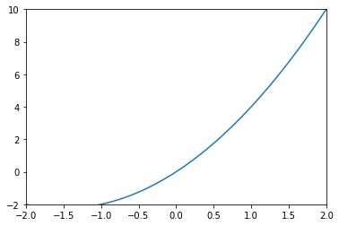

- 本实例
matplotlib的数据都会使用numpy产生，所以必须导入import numpy as np(如果对numpy不了解,移步numpy的基本使用) - 导入
matplotlib.pyplotimport matplotlib.pyplot as plt matplotlib基本绘图 （不会涉及到很复杂的用法）- 导入
import matplotlib.pyplot as plt import numpy as np- 线
x = np.linspace(1, 100, 1000) # y = 2 * x + 1 # 直线
# y = 2 ** x + 1 # 曲线
plt.plot(x, y)
plt.show() # 显示线- 显示多条线
x = np.linspace(1, 100, 1000)
y1 = 70*x + 1
y2 = x**2 + 1
plt.plot(x, y2)
plt.plot(x, y1,
color='red', # 线颜色
linewidth=1.0, # 线宽
linestyle='--' # 线样式
)
plt.show()
- 显示多个图像
x = np.linspace(1, 100, 1000) y = 50 * x + 1
y1 = x ** 2 + 1
plt.plot(x, y)
plt.figure(num=2, figsize=(8, 5)) # 此函数被调用一次就会重新申请一个figure对象就会多一个图 num 是图的编号，figsize 是图的大小
plt.plot(x, y)
plt.plot(x, y1)
plt.show()设置坐标轴
- 设置范围
x = np.linspace(-3, 3, 100) y = 3*x + x**2
plt.plot(x, y)
plt.xlim(-2, 2) # 设置 x 轴范围
plt.ylim(-2, 10) # 设置 y 轴范围
plt.show()
- 替换坐标
x = np.linspace(-3, 3, 100) y = 3*x + x**2
plt.plot(x, y)
plt.xlim(-2, 2)
plt.ylim(-2, 10)
original = np.linspace(-2, 10, 7, dtype=np.int)
plt.yticks(original, ['a', 'b', 'c', 'd', 'e', 'f', 'g']) # 用于替换坐标 第一个参数=被替换前的坐标 第二个参数=替换后的坐标
plt.show()
- 设置边框属性
x = np.linspace(-3, 3, 100) y = 3*x + x**2
plt.plot(x, y)
ax = plt.gca()
ax.spines['right'].set_color('none') # 取消右边框
ax.spines['top'].set_color('none') # 取消上边框
plt.show()
- 设置坐标轴位置
x = np.linspace(-3, 3, 100) y = 3*x + x**2
plt.plot(x, y)
ax = plt.gca()
ax.spines['right'].set_color('none')
ax.spines['top'].set_color('none')
ax.spines['bottom'].set_position(('data', 0)) # 使用.spines设置边框x轴；使用.set_position设置边框位置，y=0位置 位置所有属性有outward、axes、data
ax.spines['left'].set_position(('data',0)) # 坐标中心点在(0,0)位置
plt.show()
添加图列
x = np.linspace(1, 100, 1000) y = 50 * x + 1
y1 = x ** 2 + 1
plt.plot(x, y, label="y")
plt.plot(x, y1, linestyle="--", label="y1")
plt.legend(loc="best")
plt.show()
# 下面是 loc 的可选字段
"""
'best' : 0,
'upper right' : 1,
'upper left' : 2,
'lower left' : 3,
'lower right' : 4,
'right' : 5,
'center left' : 6,
'center right' : 7,
'lower center' : 8,
'upper center' : 9,
'center' : 10,
"""绘图种类
- scatter散点图
x = np.floor(10 * np.random.random(100)) y = np.floor(10 * np.random.random(100))
plt.scatter(x, y, alpha=.5) # 透明度为 .5
plt.show()条形图
y = np.floor(10 * np.random.random(30)) x = np.arange(1, 31)
plt.bar(x, y)
plt.show()饼图
plt.figure(figsize=(8, 8)) x = np.floor(10 * np.random.random(5))
explode = np.zeros(5)
explode[3] = .1
plt.pie(x, autopct='%1.2f%%', explode=explode, labels=['a', 'b', 'c', 'd', 'e'])
# autopct 格式化百分比精确输出 explode 是否突出显示 labels 标签
plt.legend(loc='upper right')
plt.show()
- 箱型图
fig = plt.figure(figsize=(8, 8)) ax1 = fig.add_subplot(2, 1, 1) # 图切割成(2, 1) 选择第一块
ax2 = fig.add_subplot(2, 1, 2) # 图切割成(2, 1) 选择第二块
ax1.boxplot(range(5)) # 正向箱型图
ax2.boxplot(range(5), vert=False) # 侧向箱型图
plt.show()